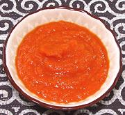

|
Kaani SauceSenegal | ||||
| Makes: Effort: Sched: DoAhead: |
1-2/3 cups ** 1 hr Yes |
Sauces of this sort are served with various street foods in Senegal and other West African countries. Adjust chili hotness to your preference, but it's not supposed to be mild. | |||
|
1-1/2 6 1 4 1 1 1/2 1/3 |
# oz cl T t t |
Tomatoes Onion Garlic Habanero (1) Bay Leaf Olive Oil (2) Salt Pepper |
Prep - (20 min)
|